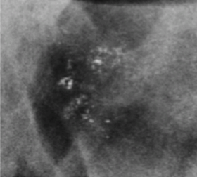
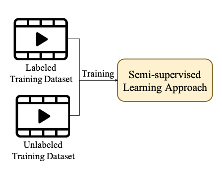

|
Kalyani Marathe
I am a Ph.D. student at the University of Washington, working with Prof. Linda Shapiro, and Prof. Ranjay Krishna.
My research interests are Computer Vision and Machine Learning.
Prior to joining the University of Washington, I was a full-stack software engineer at IDeaS Revenue Solutions, a SAS Company where I gained experience in working with cross-functional teams, understanding the business requirements, developing new features, and resolving issues of the IDeaS Revenue Management System.
Email /
CV /
Google Scholar /
Twitter /
Github /
Linkedin
|
|
|

|
Automated quantitative assessment of amorphous calcifications: Towards improved malignancy risk stratification
Kalyani Marathe,
Chrysostomos Marasinou,
Beibin Li,
Noor Nakhaei,
Bo Li,
Joann G. Elmore,
Linda Shapiro,
William Hsu
Computers in Biology and Medicine (CBM) , 2022
Paper
Slides
Developed an ML-based tool to assist radiologists in deciding whether a patient should be called for a follow-up/breast biopsy.
|
|

|
Contextual Emotion Learning Challenge
Jainendra Shukla, Puneet Gupta, Aniket Bera, Arka Sarkar, Prakhar Goel, Shubhangi
Butta, Anup Kumar Gupta, Snehil Sanyal, Debanga Raj Neog, M K Bhuyan, Kalyani
Marathe , Linda Shapiro, Alex Colburn, Varchita Lalwani
IEEE International Conference on Automatic Face and Gesture Recognition (FG) , 2021
Paper
Contextual Emotion Learning: Dataset and Challenges
|
|
{kind=link}